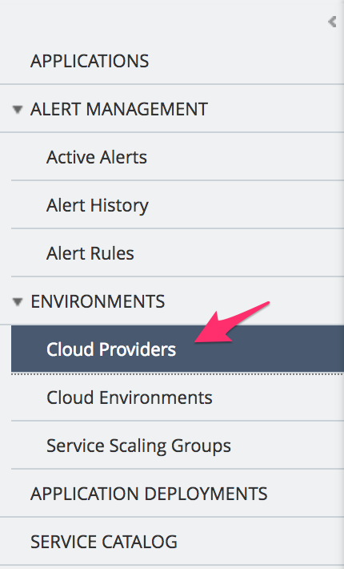

F5 BIG-IQ & Cloud Edition Lab > Class 2: BIG-IQ Deployment with auto-scale on AWS, Azure & VMware (Cloud Edition) > Module 1: Setup a Service scaling group (SSG) in VMWARE Source | Edit on
Lab 1.2: Define your Cloud Environment¶
The next step is to define your cloud environment so that BIG-IQ will be able to communicate with it and deploy F5 virtual edition. For this lab we will leverage a VMWare infrastructure
Cloud Provider Setup¶
In your BIG-IQ interface, go to Applications > Environments > Cloud Providers
{kind=link}
Click on the Create button:
Name: VMWareCloudProvider
Provider Type: select VMWARE
vCenter Hostname: 10.1.1.90

Click Save & Close. Now that your Cloud provider is setup, we can define your
Cloud Environment. Go to Applications > Environments > Cloud Environments
and click on the Create button
General Properties:
Name: SSGClass2VMWareEnvironment
Device Template: Select your previously created device template SSGSetupClass2
Cloud Provider: Select your previously created Cloud provider VMWareCloudProvider
Warning
Careful everything is case sensitive here
VMWare Properties:
DeployTo: Select ESXi Hostname and type: 10.1.1.9
Datacenter: UDF
Folder: Purple
Password: Purpl3$lab
VM Image: BIGIP-13.1.0.7-0.0.1.ALL_1SLOT_template or BIGIP-13.1.1-0.0.4.ALL_1SLOT_template
Network Interface Mappings
Networks |
VM Network |
external |
internal |
Note
[New 6.0.1] the Network Interfaces have been removed in 6.0.1, the mapping is done in the order the interfaces are configured on the VM template.

Click Save & Close
Note
with the Liberty release, we have a 1:1 mapping between the cloud provider and cloud environment. So a cloud provider can be used with only one cloud environment.
We have setup all the different element defining our Service Scaling Group
and can trigger its deployment now